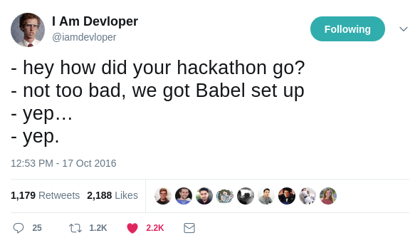

Error

Errors are generally better than failing silently, the Error object allows us to add more context to an error message. A stack trace and line number can be included as well as context around the values that caused the error
// this:
const x = new Error('I was created using a function call!')
// has the same functionality as this:
const y = new Error('I was constructed via the "new" keyword!')
throw x
Error: I was created using a function call!
at Object. (/home/ryan/development/dojo-javascript-fundamentals/src/index.js:4:11)
at Module._compile (module.js:635:30)
at Object.Module._extensions..js (module.js:646:10)
at Module.load (module.js:554:32)
at tryModuleLoad (module.js:497:12)
at Function.Module._load (module.js:489:3)
at Function.Module.runMain (module.js:676:10)
at startup (bootstrap_node.js:187:16)
at bootstrap_node.js:608:3
Process finished with exit code 1

JavaScript
This presentation is JavaScript!*

* and some css + html
let myAwesomeVariable = "Emotionally stable";
myAwesomeVariable = false;


Created by Brendan Eich, co-founder of the Mozilla project, the Mozilla Foundation, and the Mozilla Corporation.
By reading the ECMAScript specification, you learn how to create a scripting language. By reading the JavaScript documentation, you learn how to use a scripting language.
Source
Why should you care about JS?

Most In Demand Requests

Source
Most Pull Requests

Source

Browsers (OFC!)

Servers

Fat Clients
I mean desktop apps!

Mobile Apps

Robotics

Internet of Things (IOT)

"I need to display data on a page, not perform Sub Zero’s original MK fatality." - Satire article about learning JS
Running in Chrome
Hit F12
Running from the Node.JS REPL

Make sure you have Node.JS installed
The language itself

Sources and Learn More
The following slides are from the You Don't Know JS book and Mozilla Developer Network and W3 Schools Which are great resources to check out.Statements
In a computer language, a group of words, numbers, and operators that performs a specific task is a statement. In JavaScript, a statement might look as follows:
var a = 1 + 2;
- var a tells the engine to create a variable a
- = and + are operators (assignment and additon)
- 1 is a value or literal value
- ; is the statement terminator. Depending on your context it may be unnecessary
Expressions
Statements are made up of one or more expressions. An expression is any reference to a variable or value, or a set of variable(s) and value(s) combined with operators.
var a = b * 2;
- 2 is a literal value expression
- b is a variable expression, which means to retrieve its current value
- b * 2 is an arithmetic expression, which means to do the multiplication
- a = b * 2 is an assignment expression
Comments
Two styles:
var a = 42; // Everything from start to the EOL is a comment
var b = /* zomg what's going on */ 3; /* only stuff between
the symbols is a comment, it can
also
be
multiline*/
Semicolons
The new tabs vs spaces
Variables

var & let
var behaves differently depending on if the scope is at block level or functional level
let behaves consistently in both cases
What is scope anyway?

No I'm talking about variable scope!
for (var i=0; i<10; i++) {
// stuff
}
console.log(i) // => 10 (why oh why)
We can fix this with ES6 let
for (let i=0; i<10; i++) {
// stuff
}
console.log(i) // ReferenceError: i is not defined (Yay!)
function and block scope
function canHasScope() {
// function scope
var a = 'z0mg'
let b = 'QQ'
function innerFun() {
console.log(a + ' ' + b) //z0mg QQ
}
innerFun()
}
console.log(a) // ReferenceError: a is not defined
console.log(b) // ReferenceError: b is not defined
{
var c = 'superSecret'
let d = 'yeahRight'
}
console.log(c) //superSecret
console.log(d) //ReferenceError: d is not defined
Global Scope (Mostly bad)
This is the top most scope level. window in browser, global in Node
function foo() {
a = 1; // `a` not formally declared
}
foo();
a; // 1 -- oops, auto global variable :(
Prevent Pollution
Use an Immediately Invoked Function Expression (IIFE) or Module. Automatic in Node.js. NB! Be careful if not using semicolons
var i = 0;
void (function() {
// your code here
console.log(i++) //0
})();
(function() {
// your code here
console.log(i++) //1
})();
(function () {
// your code here
console.log(i++) //2
}());
Variable hoisting
'use strict'
console.log(a) //undefined
var a = 2
console.log(b) //ReferenceError: a is not defined
Const is all about memory references!
follows the same scoping rules as let
const c = 'this cannot ever change'
c = 'What about meow?' // will cause a runtime error TypeError: Assignment to constant variable.
const dessert = { type: 'pie' };
dessert.type = 'pudding'; // no problemo!
console.log(dessert.type) // pudding
dessert = { type: 'cake' }; // TypeError: Bad human!
Multiple variable assignment
let a = 2,
b = 3,
c = 7
//don't do the following:
let person = "John Doe", carName = "Volvo", price = 200;
Blocks
Normally attached to some sort of conditional or loop, but that is not required
var hello = 'Hello'
/* a block statement, will be executed when
* the interpreter reaches it. */
{
console.log(hello+' world!')
}
(Smooth) Operators
Operators are how we perform actions on variables and values.
Assignment

Comparison

Arithmetic

Logical

Bitwise

Bitwise Shift

Conditionals

if ... else
var expression1, expression2
if (expression1) {
//do something if expression 1 is truthy
} else if (expression2) {
//do something if expression 2 is truthy
} else {
//do something if expression1 and expression2 are both falsy
}
Ternery
Shorthand if/else statement
var status = (age >= 18) ? 'adult' : 'minor';
Switch
switch (someExpression) {
case 1: //will "fall through to case 2"
case 2:
// do something
break
case 7:
// do some other thing
break
case 42:
{
//do a whole block of things
}
break
default:
// default to here if none of the cases match
}
Loops
while (someExpression) {
// run some code in the block until someExpression is falsy
}
do {
/* Do this code block at least once
* Then check someExpression
* More of a yoda form of coding, try avoid. */
} while (someExpression)
break
//Please don't do this
while (true) {
if (omgThisIsRetarded) {
break
}
}

Continue
'use strict'
for (let i = 0; i < 3; i++) {
if (i === 1) {
continue
}
console.log(i)
}
// 0
// 2
Labels & Continue
var i, j
loop1: for (i = 0; i < 3; i++) {
//The first for statement is labeled "loop1"
loop2: for (j = 0; j < 3; j++) {
//The second for statement is labeled "loop2"
if (i === 1 && j === 1) {
continue loop1
}
console.log('i = ' + i + ', j = ' + j)
}
}
// Output is:
// "i = 0, j = 0"
// "i = 0, j = 1"
// "i = 0, j = 2"
// "i = 1, j = 0"
// "i = 2, j = 0"
// "i = 2, j = 1"
// "i = 2, j = 2"
// Notice how it skips both "i = 1, j = 1" and "i = 1, j = 2"
for
for (runOnceAtStart; checkCondition; runAfterEachIteration) {
//doSomething
}
for (let i = 0; i <= 9; i = i + 1) {
console.log(i)
}
// 0 1 2 3 4 5 6 7 8 9
for ... in
const a = {
b: 1,
c: 2,
d: 3,
e: {
f: 4
}
}
for (let property in a) {
console.log(property + ' : ' + a[property])
}
for...in should not be used to iterate over an Array where the index order is important
for ... of
const a = [1, 2, 3, 4, 5]
for (let i of a) {
console.log(i)
}
const b = {
c: 1,
d: 2
}
for (let i of Object.keys(b)) {
console.log(i + ' : ' + b[i])
}
basically foreach
Data Types

Simple
- string
- number
- boolean
- null
- undefined
- Symbol (ES6)
Assigning copies the value
let a = 'hi'
let b = a
b += ' there'
console.log(a) // hi
Complex
- object
- function
Assigning copies the memory reference
let a = { 'hi': 2 }
let b = a
b.potato = true
console.log(a) // { hi: 2, potato: true }
Truthy & falsely
The following values are falsy
- '', "" (empty strings)
- 0, -0, NaN (invalid number)
- null, undefined
- false
//!!value will tell you if something is truthy use the REPL
!!NaN // false
typeof
Not a function but an operator. Will tell you the type of the value.
console.log(typeof a) //undefined
console.log(typeof undefined) //undefined
console.log(typeof '') //string
console.log(typeof 1) //number
console.log(typeof true) //boolean
console.log(typeof {}) //object
console.log(typeof null) /*object !NB be careful of this null is
not actually an object. this is a bug that cannot be fixed as
it will break the internet */
console.log(typeof Symbol()) //symbol
console.log(typeof function () {}) //function
instanceof
Not a function but an operator. Will walk up the prototype chain and tell you if the first object is a decendant of the second object
let a = {
potato: true
}
function Car(make = 'Honda', model = 'Accord', year = 1998) {
this.make = make
this.model = model
this.year = year
}
var demonHunter = new Car('Chevy', 'Impala', 1967)
console.log(demonHunter instanceof Car) // true
console.log(demonHunter.model) // Impala
console.log(a instanceof Car) // false
Object.setPrototypeOf(a, demonHunter)
console.log(a.make) // Chevy
demonHunter.year = 1970
console.log(a.year) //1970
console.log(a.potato) //true

String
All things text!
Escape
let a = "I'm not keen of string escapes";
a = '"Neither am I" said bob';
a = "\"you can't use them!\"";
a = "Need to escape backaspace man\\";
a = "You can also add newlines \n";
a = 'Hello \
world'
console.log(a) //Hello World
Constructors are bad mkay
//Don't use the constructor
let a = new String();
b = ''
typeof a === typeof b //false
//Except to cast
String(13)[1] // '3'
// can also use .toString()
(13).toString()[1] // '3'
String operators
let a = 'Hello';
a = a + ' ';
a += 'World!'
console.log(a); // Hello World!
Template Strings
for (let i = 0; i < 4; i++) {
console.log(`[${i}] Hello World!`)
}
/* [0] Hello World!
[1] Hello World!
[2] Hello World!
[3] Hello World! */
Number
JS uses a 64-bit Floating Point for all numbers.
This has lead to some inaccuracies
Integers - accurate up to 15 digits
The maximum number of decimals is 17
Inacurate arithmetic with decimals, mutiply & divide!
NaN- Not a Number
Global method, isNaN()
console.log(Infinity + 1) //Infinity
console.log(Infinity - 1) //Infinity
console.log(Infinity + 1 > Infinity - 1) //false
console.log(Infinity + Infinity) //Infinity
console.log(Infinity * Infinity) //Infinity
console.log(-Infinity + 1) //-Infinity
console.log(1 / 0) //infinity
Converting to different types of string
var someValue = 255
console.log(someValue.toString()) // '255' same as .toString(10)
console.log(someValue.toString(16)) // ff
console.log(someValue.toString(8)) // 377
console.log(someValue.toString(2)) // 11111111
Number literals
console.log(255) // 255
console.log(0o377) // 255 but in octal
console.log(0xff) // 255 in hex
console.log(0b11111111) // 255 but in binary
Properties
Functions
Boolean
Not the same as truthy & falsy!
Undefined
Means that the value has not been defined
console.log(a); //undefined
var a;
null
console.log(null > 0) // false
console.log(null == 0) // false
console.log(null >= 0) // true

Explanation
Symbol
data type, called "symbol", and the class-like function, called Symbol()
Every symbol value returned from Symbol() is unique. A symbol value may be used as an identifier for object properties; this is the data type's only purpose. Some further explanation about purpose and usage can be found in the glossary entry for Symbol.
const a = {}
void (function() {
let myPrivateMethodId = Symbol()
a[myPrivateMethodId] = function() { return 'password' }
a.higherOrderFunction = function() {
let password = a[myPrivateMethodId]()
//call api using password
return 42
}
})()
//a[myPrivateMethodId]() //can't be called here
console.log(a.higherOrderFunction())
Object

In JavaScript, objects are just key-value pairs.
Aka a dictionary
let myObject = {
firstProperty: 1,
secondProperty: 'string',
thirdProperty: {
firstInner: 'hi'
},
'Omg you can have spaces': {
something: {
3: 'dynamic'
}
}
}
console.log(myObject.thirdProperty.firstInner) //hi
console.log(myObject['Omg you can have spaces'].something[3]) //dynamic
Changes at runtime!
let myObject = {}
myObject.newProp = {}
myObject.newProp.isAwesome = true
const propName = 'Awesome Property';
myObject[propName] = {
a:1,
b:2,
c:3
}
console.log(myObject.newProp.isAwesome) // true
console.log(Object.keys(myObject[propName]).length) //3
Function
doStuff() //hoisting - invoke function defined below
// anonymous function - no name in stack trace
function () { /* doStuff */ }
function doStuff() { /* doStuff */ } //named function
// named function (assigned to variable) - can't be hoisted
const doStuff3 = function(){ /* doStuff */ }
//es6 anonymous function - can't be hoisted, bad.
() => {}
//es6 named function - can't be hoisted
const doStuff2 = () => {};
Passing arguments & returning results
const result = add(1, 2)
console.log(result)
function add(left, right) {
return left + right
}
Default values to parameters
log('hello world')
function log(message, prefix = '[' + new Date().toISOString() + '] ') {
console.log(prefix + message)
//[2018-02-10T17:49:28.342Z] hello world
}
The arguments keyword
log('hello world', { a: true }, 1)
function log() {
let message = '[' + new Date().toISOString() + '] '
for (let a of arguments) {
message += a.toString() + ' '
}
console.log(message)
//[2018-02-10T17:52:12.241Z] hello world [object Object] 1
}
Functions are objects too
function myFunction() {
console.log(myFunction.level)
}
myFunction.level = 6
myFunction()
function functionExecutor(functionToExecute) {
return functionToExecute()
}
functionExecutor(myFunction)
Closure
You can think of closure as a way to "remember" and continue to access a function's scope (its variables) even once the function has finished running.
function makeAdder(x) {
function add(y) {
return y + x
}
return add
}
let plusOne = makeAdder(1)
let plusTen = makeAdder(10)
plusOne(3) // 4 <-- 1 + 3
plusOne(41) // 42 <-- 1 + 41
plusTen(13) // 23 <-- 10 + 13
Type Coercion
* Explicit vs implicitExplicit
console.log(Number('42')) //42
console.log(Number('0xff')) //255
console.log((7).toString()) //7
console.log(Boolean(1)) //true
implicit
console.log(typeof ('' + 5)) //string
console.log(typeof ('1' + 5)) //string
console.log(typeof (5 + '1')) //string
console.log(typeof ('1' - 5)) //number
console.log(typeof ('1' * 5)) //number
console.log('1' < 5) //true
console.log('1' < '5') //true NOTE this is alphabetically less.
console.log('b' < 'a') //false (alphabetically)
console.log('4' == 4) //true
'use strict'

Always*
- Added in ES5
- More maintainable by humans*
- More optimisable by the engine*
- Should always be at the top of the file
- Does work as top line of function. But Don't
No more auto-global variables when you forget var
'use strict';
mistypeVariable = 17; //error
Setting undefined to a value
undefined = 2 //error
Assignment to a non-writable global. May only work in certain situations
let undefined = 5; // throws a TypeError
let Infinity = 5; // throws a TypeError
Duplicate function parameters
function asd(a, b, a) {} //error
Duplicate properties. An error in ES5 only not in ES6.
let a = {
b: 42,
b: 43
} //error in ES5
This link has an explanation as to why
Assignment to a non-writable property
let obj1 = {}
Object.defineProperty(obj1, 'x', { value: 42, writable: false })
obj1.x = 9 // throws a TypeError
Assignment to a getter-only property
let obj2 = {
get x() {
return 17
}
}
obj2.x = 5 // throws a TypeError
Assignment to a new property on a non-extensible object
let fixed = {}
Object.preventExtensions(fixed)
fixed.newProp = 'ohai' // throws a TypeError
Throws an error if you try delete undeletable properties. previously no effect.
delete Object.prototype // throws a TypeError
Throws an error when trying to set a property on a primitive
(1).hiThere = "heya!"
Octal numbers need a o between the 0 and the value
let a = 0363 //error
let a = 0o363; //fine
Why not to use strict mode
Prototypes
This is a fairly advanced concept. JS doesn't use class based inheritance like other langauges. This is a good thing as it gives JS it's power. Each object is part of a chain of objects leading back to the base Object instance.
let a = {}
a.__proto__.toString = function() {
return 'hi'
}
console.log(a.toString()) //hi
var b = {}
console.log(b.toString()) //hi
Just like this image is made up of multiple layers that seem like one picture when combined, so too are objects in JS
We can take advantage of this to combine objects together rather than inheriting from a base class
let foo = {
a: 42
}
// create `bar` and link it to `foo`
let bar = Object.create(foo)
bar.b = 'hello world'
bar.a // 42 <-- delegated to `foo`
foo.a = 67 // Changes persist dude to just being a memory reference.
bar.a // 67 <-- delegated to `foo`
JSON
JavaScript Object Notation. A way to serialise objects to strings.
Polyfill
Shims
Transpiling
Bundling & Minification

eval
console.log(eval('2 + 2')) // 4
let x = 2,
y = 4
console.log(eval('x + y')) // local scope, result is 6
eval() is a dangerous function, which executes the code it's passed with the privileges of the caller. If you run eval() with a string that could be affected by a malicious party, you may end up running malicious code on the user's machine with the permissions of your webpage / extension. More importantly, a third-party code can see the scope in which eval() was invoked, which can lead to possible attacks in ways to which the similar Function is not susceptible.
MDN Reference
RegExp
let syntax1 = /ab+c/
let syntax2 = new RegExp('ab+c')
let re = /(\w+)\s(\w+)/
let str = 'John Smith'
let newstr = str.replace(re, '$2, $1')
console.log(newstr) //Smith, John
Math
console.log(`iPhone Price: $${(Math.random() * 1500).toFixed(2)}`)
Array
let queue = [1, 2, 3, 4]
queue.push(5)
console.log(queue) // [ 1, 2, 3, 4, 5 ]
console.log(queue.pop())
console.log(queue) // [ 1, 2, 3, 4 ]
MDN Reference
Date
const now = new Date()
console.log(now.toISOString())
//2018-02-10T19:48:20.944Z
JSON
const a = { a: 1, b: 2 }
let jsonStirng = JSON.stringify(a, null, 4) // use 4 spaces
console.log(jsonStirng) //pretty
const cloneOfA = JSON.parse(jsonStirng)
/* {
"a": 1,
"b": 2
} */
Void
same as
function myVoid(expr) {
return undefined;
}
document
dAn object representing the current html page you are on. Ultimately frameworks like jQuery, React, Angular etc all use this to make changes to the page. You can do it yourself with standard built in JS too.
MDN Referencewindow
Object containing the DOM document, can get (and sometimes set) all sorts of interesting browser window properties
MDN Reference